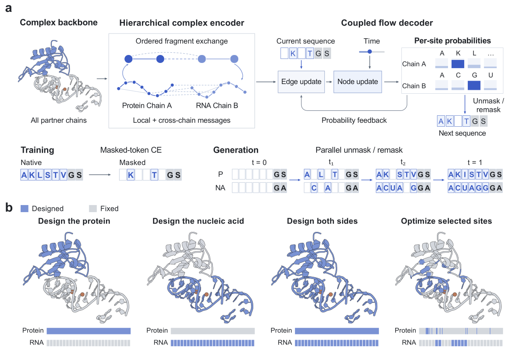
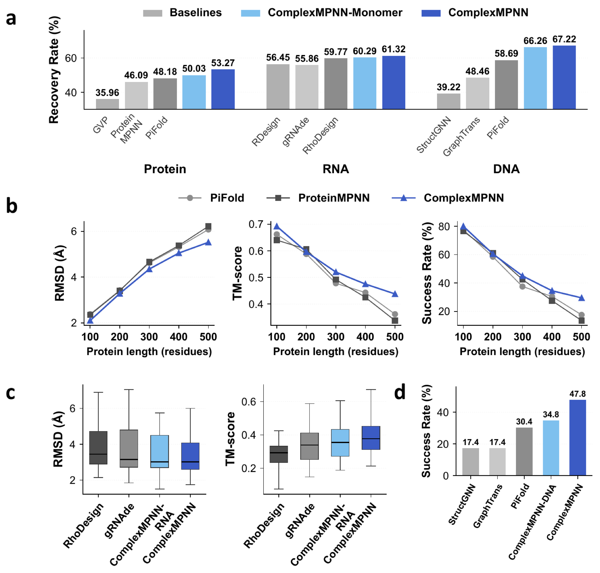
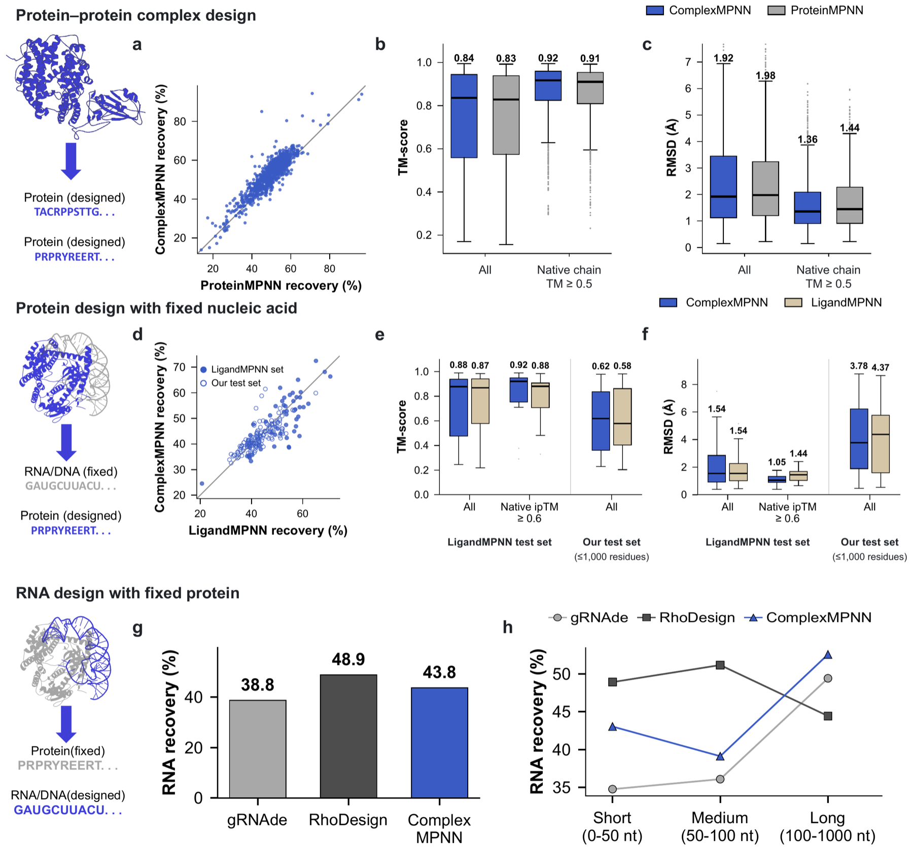
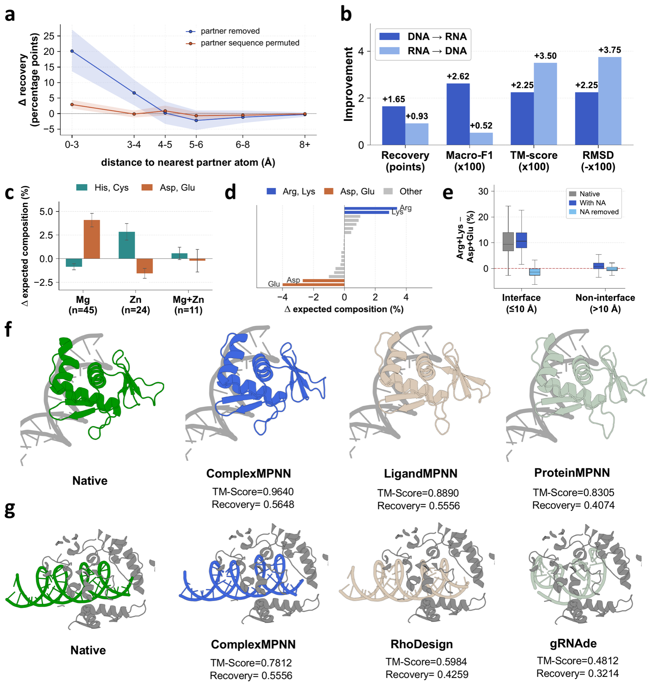
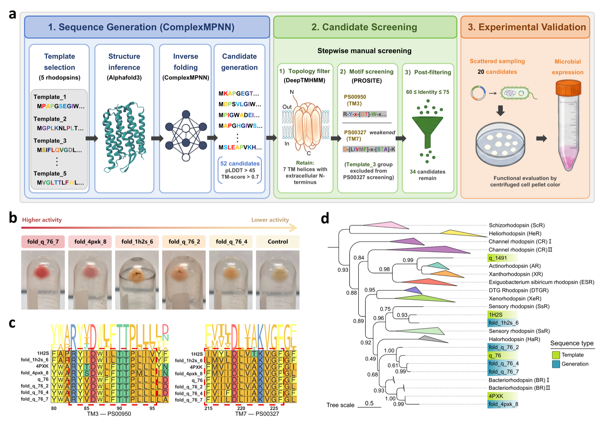
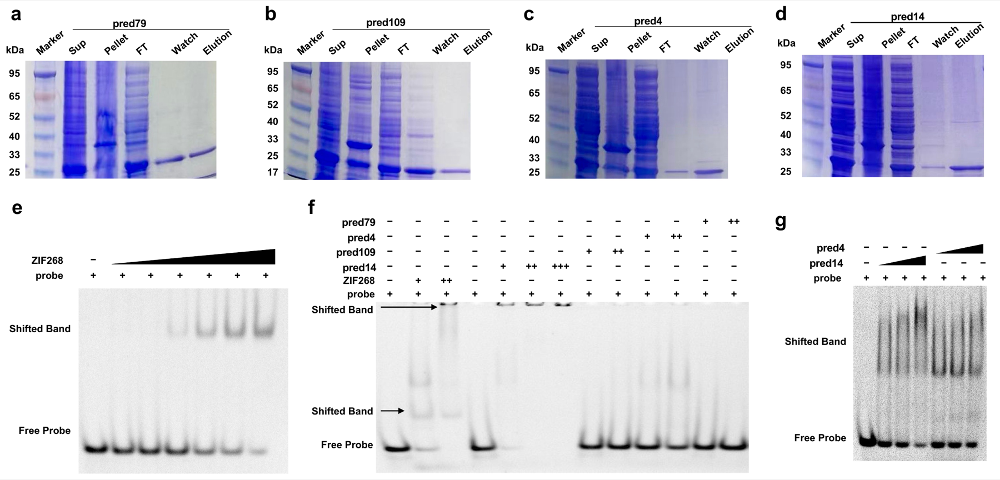

†Equal contribution · *Corresponding authors
Human SRP19 bound to helix 6 of SRP RNA, with two magnesium ions included as context. Generation starts with all designable positions masked. At each step the decoder predicts amino-acid and nucleotide probabilities for every designable position, fills a selection of the masked ones by sampling from those probabilities, and masks a few filled positions again so that their identities can be revised in later steps. The protein and the RNA are updated together, so the amino acid or nucleotide chosen at one position becomes part of the context for predicting its neighbors, including those on the partner chain.

Inverse folding uses a target biomolecular structure to design sequences that can fold into it. In complexes, sequence design also needs to account for interactions between components. Here we present ComplexMPNN, a unified model for protein, RNA and DNA inverse folding. Its hierarchical encoder integrates structural and chemical information across the complex, and its coupled flow decoder refines sequences at selected positions. It can design individual chains or multiple components together and complete partially specified sequences. Across monomer and complex benchmarks, ComplexMPNN improves sequence recovery and refolding performance. Context analyses show that its predictions respond to partner sequences and local chemistry. Experimental tests identified rhodopsin designs with pigmentation indicating successful expression and zinc-finger designs with DNA-binding activity. By allowing interacting proteins and nucleic acids to be designed together, ComplexMPNN provides a basis for developing new recognition pairs for gene regulation.
One model is evaluated on protein, RNA and DNA monomers, on protein–protein complexes and on both directions of protein–nucleic-acid design, against specialized methods retrained on the same training set. Designs are refolded with AlphaFold3, without multiple-sequence alignments or structural templates, and compared with the target structures.
On monomers, ComplexMPNN reached higher sequence recovery than the protein-specific methods across all three length groups, and the refolding success rate on long proteins was 32.0 per cent against 22.2 for PiFold. On RNA it reached higher recovery than RDesign, gRNAde and RhoDesign, with lower RMSD and higher TM-scores; on DNA, higher recovery and a higher refolding success rate than StructGNN, GraphTrans and PiFold.

In protein–protein complexes, with all protein chains designed together, recovery was about 3 percentage points higher than ProteinMPNN retrained on the same chains, with TM-score and RMSD improving as well. Against LigandMPNN, with the nucleic acid fixed, recovery was comparable and refolding more accurate: on the subset whose native-sequence predictions reach ipTM ≥ 0.6, median RMSD was 1.05 Å against 1.44. Designing the RNA instead, with the protein fixed, beat gRNAde overall and every method at 100 nucleotides or more.

What the partner contributes is local. Removing it costs the most recovery at the residues closest to it; shuffling the nucleotide identities while keeping the coordinates costs 2.9 percentage points within 3 Å and 1.2 across the 5 Å interface. Providing magnesium raises the predicted proportion of Asp and Glu nearby, and providing zinc raises His and Cys.

Five of 20 microbial rhodopsin designs produced distinctly pigmented pellets against the empty-vector control, from three templates and at 69 to 74 per cent global identity to those templates. The positive designs kept the retinal-binding lysine and the conserved motif in the third transmembrane helix.

The ZIF268 protein was redesigned with its DNA duplex and the three structural zinc ions held fixed. All four selected designs were expressed and purified, and two of them, pred14 and pred4, shifted the target probe in an electrophoretic mobility shift assay.

git clone https://github.com/OpenRaiser/ComplexMPNN.git
cd ComplexMPNN
pip install -r requirements.txt
python complexmpnn/design.py \
--input examples/1jid.pdb --out_dir out/design \
--ckpt weights/complexmpnn.pt \
--design_types protein \
--temperature 0.1 --flow-steps 50 --seed 111